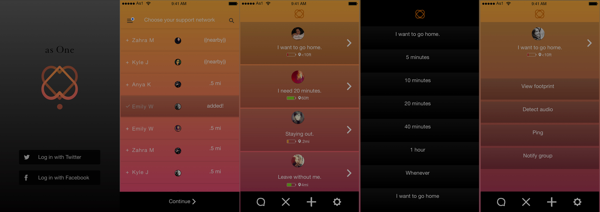
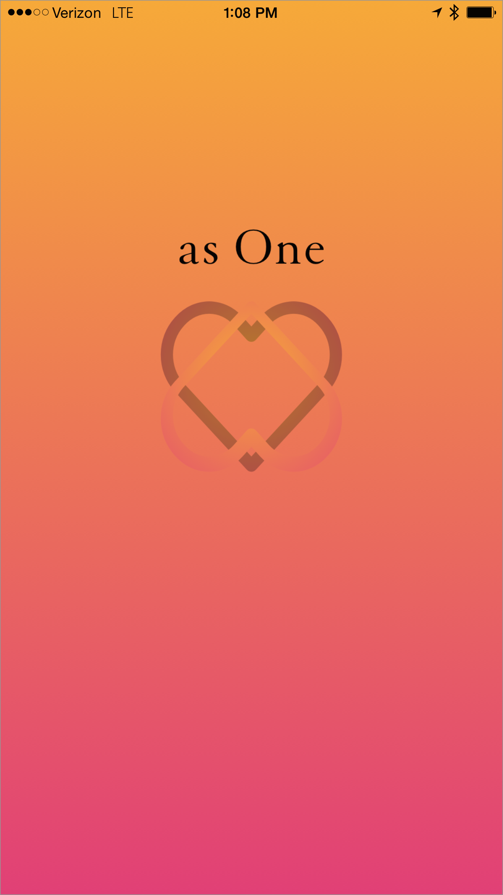
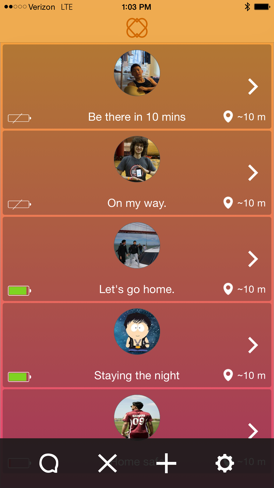
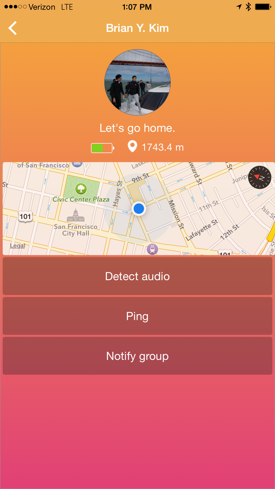

Over the summer, I went to Chimehack2 with a few friends. It was a hackathon hosted by Twitter to promote hacking for change.
Hacking for change
Campus safety was a key theme at Chimehack. It was an issue my teammates and I had all recently witnessed in college. From the start of the weekend, it was clear this was the problem we wanted to tackle.
To brainstorm, we thought back to our own encounters with campus safety. Most of the time, it revolved around making sure friends are ok.
Making College a Safer Space
When your friend goes missing, they're not picking up their phone and you don't know whether or not their phone is dead. They're probably not in enough danger to call campus safety, but that doesn't mean you're not concerned for your friend.
That's why we built an iOS app called asOne. It's a better way to communicate in groups when going out. Instead of annoying group messages, we create temporary friend groups that shares information about each member's location, battery level, and the time they want to go home.
An entire iOS app in 48 hours
Our team had 48 hours, 4 engineers, and 1 designer. We formed teams friday night, and I had the next 12 hours to work out the user flow, freeze the wireframes, and export the assets. I spent the rest of saturday designing our logo, making incode changes, and prepping for the demo.
An entire iOS app in 48 hours
Onboarding and privacy concerns
Usability and the onboarding process was a key concern for me. Nobody was going to use our app when they really needed to, if it was hard to sign up, log in, and begin seeing the value we provide. Because we were at twitter, we received a lot of feedback about the challenges when creating a product that only works when many users choose to engage.
With that in mind, it became clear to me that we weren't here to build a social media app. Having a social network was only the means to our goal. The only thing we came here to do was make it easier for college students to look after their friends. We didn't need to create our own user id system, we can just use the facebook SDK. The main drawback to this solution was issues of privacy. Our remedy was a system where the group you formed only lasts until the next morning; to use the app again, you must reform a group. To minimize friction in this process, we included recent and nearby friends at the top.
The color of friendship
Inclusiveness was a major theme throughout both Chimehack and the mission our technology. Using our app is essentially making a pact within your friends. To turn this feeling of warmth, unity, and trust into this sort of emblem, I designed a logo with a symmetrical heart pattern and warm blending.

The rest of the views following the splash screen are functional realizations of this feeling that you're around you're closest friends. So it was natural to extend these intense and intimate colors through the entire interaction.
Picking up where phones left off
The resting screen is our main view. It's the dashboard that is designed to replace the logistical hassle of a group message. The resting screen makes it easy to check up on your friends periodically. Without any engagement from the user, the dashboard automatically displays information we're able to natively access from each friend's phone.

When designing this view, I thought back to all the things I can't do just by calling each individual in my group.
1. Assuming my friends pick up, I probably won't be able to hear them speak well, so the first thing I want is an easy way to get exactly a status update.
2. An easy way to glance over all my group members at once so I don't have to call each of them individually.
3. They're probably not all going to pickup anyways, so I'd rather just look at where they are on a map.
4. If I can't look at where they are that means their battery is probably dead - so I want to be able to see what their battery status is.
Details view
Usually when everyone's ready to go home, there's that one person that nobody can find. So we created a detail view as an extension to the group view. Tapping on your friend brings you to more actions such as sending a push notification and enabling audio. Additionally we automatically set the true north of the inline map to that of the selected friend.
Conclusion
We built this app because this was a tool missing from our everyday lives, and for the rest of the summer we would often use it as a tool to ping and find eachother. Since then, similar apps such as Friend Finder and Companion have made their way into the market.
In retrospect, the technology wasn't earth shattering, but this is a great example of how fast a talented team can work decisively when there is good chemistry. In one weekend, we shipped a product that would take a company at least half a year to assemble.